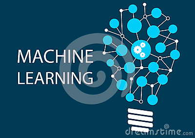

机器学习实战code源码
第二章 K-近邻算法-机器学习实战-code
第三章 决策树-机器学习实战-code
第四章 朴素贝叶斯-机器学习实战-code
第五章 Logistic回归-机器学习实战-code
第六章 支持向量机-机器学习实战-code
另外附上一些机器学习的资料

《16 Free eBooks On Machine Learning》
介绍:16本机器学习的电子书，可以下载下来在pad，手机上面任意时刻去阅读。不多我建议你看完一本再下载一本。
介绍:标题很大，从新手到专家。不过看完上面所有资料。肯定是专家了
介绍：入门的书真的很多，而且我已经帮你找齐了。
介绍：Sibyl 是一个监督式机器学习系统，用来解决预测方面的问题，比如 YouTube 的视频推荐。
介绍：Yoshua Bengio, Ian Goodfellow, Aaron Courville著
介绍:关于(Deep) Neural Networks在 NLP 和 Text Mining 方面一些paper的总结
介绍:计算机视觉入门之前景目标检测1（总结）
介绍:计算机视觉入门之行人检测
介绍:Important resources for learning and understanding . Is awesome
介绍:这又是一篇机器学习初学者的入门文章。值得一读
介绍:在线Neural Networks and Deep Learning电子书
介绍:python的17个关于机器学习的工具
介绍:下集在这里神奇的伽玛函数(下)
介绍:作者王益目前是腾讯广告算法总监，王益博士毕业后在google任研究。这篇文章王益博士7年来从谷歌到腾讯对于分布机器学习的所见所闻。值得细读
介绍:把机器学习提升的级别分为0~4级，每级需要学习的教材和掌握的知识。这样，给机器学习者提供一个上进的路线图，以免走弯路。另外，整个网站都是关于机器学习的，资源很丰富。
介绍:机器学习各个方向综述的网站
介绍:深度学习阅资源列表
介绍：这是一本来自微的研究员 li Peng和Dong Yu所著的关于深度学习的方法和应用的电子书
介绍:2014年七月CMU举办的机器学习夏季课刚刚结束 有近50小时的视频、十多个PDF版幻灯片，覆盖 深度学习，贝叶斯，分布式机器学习，伸缩性 等热点话题。所有13名讲师都是牛人：包括大牛Tom Mitchell （他的［机器学习］是名校的常用教材），还有CMU李沐 .（1080P高清哟）
介绍:在今年的IEEE/IFIP可靠系统和网络（DSN）国际会议上，Google软件工程师Tushar Chandra做了一个关于Sibyl系统的主题演讲。 Sibyl是一个监督式机器学习系统，用来解决预测方面的问题，比如YouTube的视频推荐。详情请阅读google
sibyl
介绍:谷歌研究院的Christian Szegedy在谷歌研究院的博客上简要地介绍了他们今年参加ImageNet取得好成绩的GoogLeNet系统.是关于图像处理的。
介绍:贝叶斯学习。如果不是很清可看看概率编程语言与贝叶斯方法实践
介绍:网友问伯克利机器学习大牛、美国双料院士Michael I. Jordan：”如果你有10亿美金，你怎么花？Jordan: “我会用这10亿美金建造一个NASA级别的自然语言处理研究项目。”
介绍:常见面试之机器学习算法思想简单梳理,此外作者还有一些其他的机器学习与数据挖掘文章和深度学习文章,不仅是理论还有源码。
介绍：Videolectures上最受欢迎的25个文本与数据挖掘视频汇总
介绍:在Kaggle上经常取得不错成绩的Tim Dettmers介绍了他自己是怎么选择深度学习的GPUs, 以及个人如何构建深度学习的GPU集群: http://t.cn/RhpuD1G
介绍:对话机器学习大神Michael Jordan
介绍:还有２，３部分。http://blog.sina.com.cn/s/blog_46d0a3930101gs5h.html
介绍:是Stanford 教授 Andrew Ng 的 Deep Learning 教程，国内的机器学习爱好者很热心的把这个教程翻译成了中文。如果你英语不好，可以看看这个
介绍:因为近两年来，深度学习在媒体界被炒作很厉害（就像大数据）。其实很多人都还不知道什么是深度学习。这篇文章由浅入深。告诉你深度学究竟是什么！
介绍:这是斯坦福大学做的一免费课程（很勉强），这个可以给你在深度学习的路上给你一个学习的思路。里面提到了一些基本的算法。而且告诉你如何去应用到实际环境中。中文版
介绍:这是多伦多大学做的一个深度学习用来识别图片标签／图转文字的demo。是一个实际应用案例。有源码
介绍:机器学习模型，阅读这个内容需要有一定的基础。